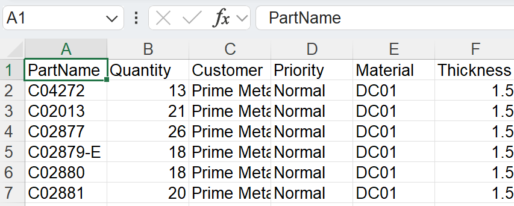

Importer jobs
Importer fra csv eller xlsx
De kan også importere jobs i almindelige tekstformater
-
Klik på File → Open → Importér jobs, Åbn mappe- dialogen vises. Vælg
C:\Program Files\Metamation\Praxis\Samples\Jobs\C0\C0.csv.
-
Hvis alle dele findes i csv-placeringen eller i opslagsmappe-kataloger, vises nyt job vinduet ved at liste alle dele, der matcher csv- felterne.
-
Manglende dele ignoreres og vises ikke i nyt job vinduet.
-
Indledningsvis er delstatus Nascent.

-
Klik på OK, nu importeres dele i delebiblioteket. CAD- validering, værktøj til buk og skære værktøjsinstans udført, som kan overvåges på Pmonitor skærmen.

Opret en tom del for de manglende CAD-filer
Når De importerer jobs ved hjælp af et regneark (.csv eller .xlsx), kan De nogle gange have rækker, der refererer til CAD-filer, der ikke er tilgængelige i systemet.
-
For at håndtere dette skal De gå til fabrik → Indstillinger → Job, under Import af regneark aktivér Opret en tom del for de manglende CAD-filer

Når denne indstilling er valgt:
-
Hvis en CAD-fil mangler for nogen række under jobimporten, vil systemet automatisk oprette en tom del i stedet for den manglende CAD-fil.
-
I nyt job vinduet er disse manglende dele visuelt fremhævet i gult for at angive, at den tilknyttede CAD-fil mangler.

-
Den manglende del vil stadig have sine kortlagte felter (som delnavn, materiale, tykkelse, antal osv.) fra CSV’en. Dens delstatus vil dog blive vist som Nascent, hvilket betyder, at det bare er en tom pladsholder uden nogen faktisk geometri endnu.

Dette sikrer, at jobimporten stadig kan fortsætte uden fejl på grund af manglende CAD-filer — De kan senere opdatere eller erstatte den tomme del med den korrekte CAD-fil, når den bliver tilgængelig.
Vis ikke dialogen Nyt job, hvis regnearket ikke har fejl
fabrik → Indstillinger → Job → Import af regneark→ Vis ikke dialogen Nyt job, hvis regnearket ikke har fejl
-
Når denne afkrydsningsboks er valgt, opretter systemet automatisk det nye job uden at vise dialogboksen Nyt job, hvis regnearket ikke har fejl (ingen manglende dele, manglende datoer eller ugyldige data).
-
Når denne afkrydsningsboks er ryddet, vises dialogboksen Nyt job altid til brugergennemgang og bekræftelse, selvom regnearket ikke har fejl.
Prefer raw-material column over material + thickness
fabrik → Indstillinger → Job→Prefer Raw-Material column over Material + Thickness
-
Når denne afkrydsningsboks er valgt, forventer systemet, at regnearket bruger råmateriale-kolonnen (for eksempel Steel-20). Dette betyder, at materialetypen og tykkelsen skal kombineres i en enkelt værdi i én kolonne.
-
Når denne afkrydsningsboks er ryddet, forventer systemet, at regnearket har separate kolonner for materiale og tykkelse (for eksempel Steel og 2.00). Systemet kombinerer dem internt under import.

Overvåg mappe ved hjælp af CSV/XLSX
-
I fabrik → Indstillinger→ Overvåg markér Aktivér 'Live mappe' og Overvåg også undermapper.
-
Indstil overvågningsmappe-stien (UNC eller kortlagt drev).
-
I Import af regneark, markér Importér regneark fra 'Live mappe'.

-
Vælg Importér jobs fra regneark-importindstillinger.
-
Kopier
C:\Program Files\Metamation\Praxis\Samples\Jobs\C0\C0.csvog indsæt det i overvågningsmappen. -
Systemet kontrollerer CSV’en og forsøger at oprette jobbet automatisk.
-
Hvis CAD-filen mangler, oprettes ingen job, fordi de nødvendige CAD-data ikke findes.
CAD-opslagsmappe & rekursiv CAD-søgning - ikke konfigureret
-
I fabrik → Indstillinger → Job → Import af regneark, hvis ingen CAD lookup directories er angivet og Brug rekursiv CAD-søgning ikke bruges, søger systemet ikke automatisk efter CAD-filer.
-
Hvis Opret en tom del for de manglende CAD-filer afkrydsningsboks er valgt, vil jobbet stadig blive oprettet, selv når CAD-filer mangler.
-
I dette tilfælde vil alle dele i jobbet blive oprettet som nascent (tomme) dele — hvilket betyder, at de ikke har nogen geometri, fordi CAD-filerne ikke kunne findes.

CAD-opslagsmappe & rekursiv CAD-søgning - konfigureret
Når CAD opslagsfortegnelser er indstillet til (C:\Program Files\Metamation\Praxis\Samples) og Brug rekursiv CAD-søgning er aktiveret under fabrik → Indstillinger → Job → Import af regneark:
-
Systemet søger automatisk i den angivne mappe og alle dens undermapper efter de nødvendige CAD-filer, der er nævnt i regnearket.
-
Opret en tom del for de manglende CAD-filer er også aktiveret, så hvis nogen CAD-fil stadig ikke findes, vil systemet oprette en tom del som en pladsholder.